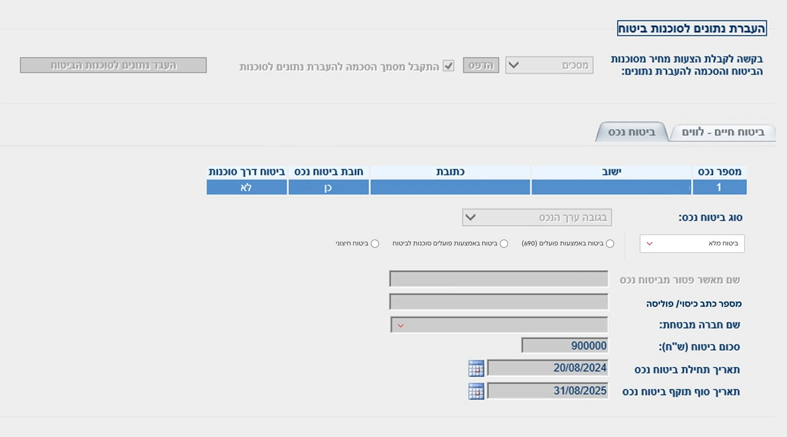
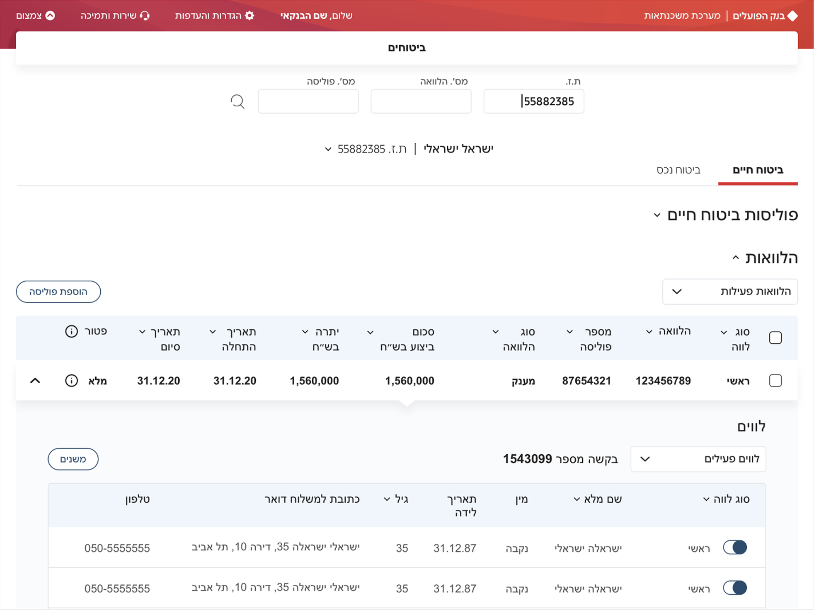

2025–2026 · 12 months
Role
Product Design Manager
Scope
User Research, UX, UI, Microcopy, Usability Testing, Design System
Bank Hapoalim's mortgage bankers worked across four separate systems, some of them over 40 years old. I led the design of one product that reads from all of them, so a banker can answer a customer without leaving the screen.
regular
users
Bankers who rely on the dashboard daily.
call handling
time
Average drop in call handling time per case.
A customer gets a mortgage offer and is asked to insure the property. To answer one question about that policy, a banker opens four systems: one for the loans inside the mortgage, one for who the borrowers are, one to log the call, and one for the insurance itself. Then they check that the policy is recorded correctly against the right loans. That last part was done on paper, with a calculator on the desk.
Loans, properties, insurance and call history each lived somewhere else. Nothing connected them except the banker.
Checking coverage against the right loans was manual arithmetic. Every answer a customer got depended on a banker not making a mistake.
Bankers read terms off the screen in the bank's own wording. Customers did not follow, so each banker improvised an explanation in their own words. Management's goal going in was simple: shorter calls, less banker time per case.

We started with insurance. One domain out of four, and the one where the four systems collided.
Nothing underneath was replaced. Those systems are decades old and still running today, so what we built is a layer that reads from them, works out what belongs with what, and puts it on one screen. That constraint shaped the design more than any preference of mine did.
In the old system a loan lived in one place and the people who took it lived behind a different tab. The banker held the connection between them in his head. In the new screen a customer contains their loans, and a loan opens to the people on it. The relationship is not something you look up. It is where the information sits.
Actions moved to where the information already was: add a policy from the loans header, change borrowers from the borrower list. And amounts got commas. The old screen asked a banker to read nine hundred thousand shekels as 900000 and count the digits himself.

It shipped in three months, to every banker, with the old system still running beside it. Once it held up, I went back to management and proposed building the rest.
Not everyone moved. The old system kept running beside the new one and nobody was forced to switch, so the bankers who had been there longest simply stayed where they were. The reason surprised me. The legacy systems are keyboard systems. Years of muscle memory, no mouse, no looking down at your hands. Our version asked them to reach for a mouse, and it made them slower at a job they were already fast at. That is not fear of change. That is a fair complaint.
So we designed for their hands. Slash opens search. Escape clears every filter. Command-K goes anywhere in the system. Arrow keys move between customer records without closing the panel. On a screenshot it reads like a power-user detail. It was the answer to the complaint.
The MVP was one screen doing one job. What management approved was a system, in four languages.
A banker opens their own pipeline. An underwriter opens a desk of exceptions. Operations and a system administrator each get a view of their own, built around what they are responsible for. The banker has no analytics. The underwriter does.
The two views are the same file at different moments. A banker sends it up, and it lands in the underwriter's queue under the same number. You cannot hand a file between four people while it lives in four places.
Open a file and they arrive together. It works out what the loan requires against what the policies actually cover, and names the borrower who is short. That is the paper and the calculator, gone.
Every edit carries who made it, when, and what it changed from and to. When a file moves between four people, that history is how the next one picks it up. Audit Trail is a top-level item, and not every role can open it.
A few screens, and one file moving through them.
A banker reads a term off the screen and says it to the customer. The customer does not know what it means. The banker explains it in their own words, and the next banker explains it differently. That is not a training problem. It is a screen problem.
So we rewrote the terms bankers read aloud into the words customers already use. Nothing changed in the documents, the forms, or the systems underneath. Only what appears on screen. Inside a bank that distinction is the whole negotiation, and it took a long one with Legal to put the line in the right place.
Then I proposed something nobody asked for. Run the entire interface in four languages: Hebrew, English, Arabic and Russian. A banker works in theirs, and the customer sitting across from them hears the terms in theirs, with nobody translating a financial term on the spot.
I translated with AI, then sat with bankers who speak each language natively and went through it line by line. The AI was fast. They were the ones who caught what would not have survived a real conversation with a customer.
Management was already measuring how long a mortgage call took, and wanted it shorter. Average call handling time dropped by eight minutes.
More than 150 bankers now use the system as their daily workspace, not as something they open occasionally. And they reported something the metric does not capture: the shorter calls felt better. Fewer moments of friction, more of an actual conversation.
The goal was measured before we started. What I took to management when I asked to build the rest was not. That was banker feedback and a product manager who was convinced. The number came afterwards.
We never switched the old system off. It ran beside the new one for as long as people needed it, and nobody was made to move. That is what made the resistance useful instead of expensive. The bankers who stayed put were not blocking anything, so what they told us arrived as information rather than as a problem to manage.
The part I would not have guessed is that the strongest objection came from the people who were best at the old system, and that they were right. If you take a tool away from someone who is fast with it, being modern is not enough. You have to give them their speed back.